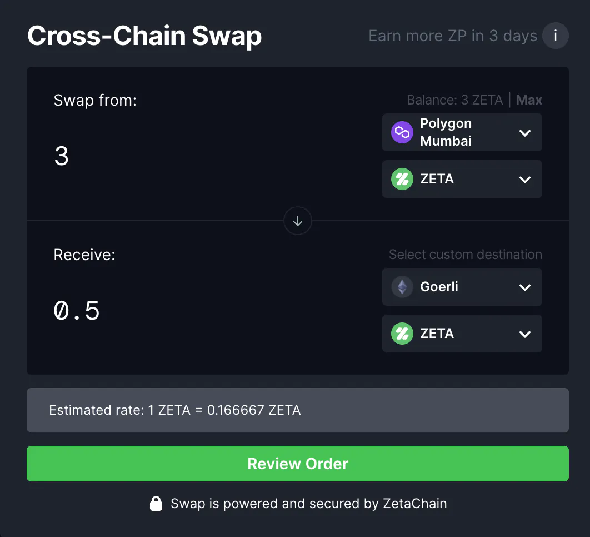
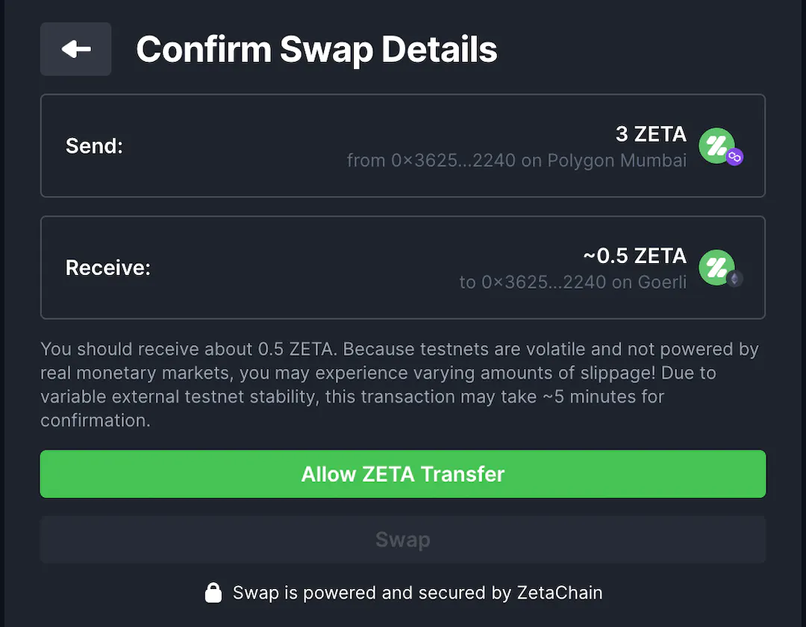
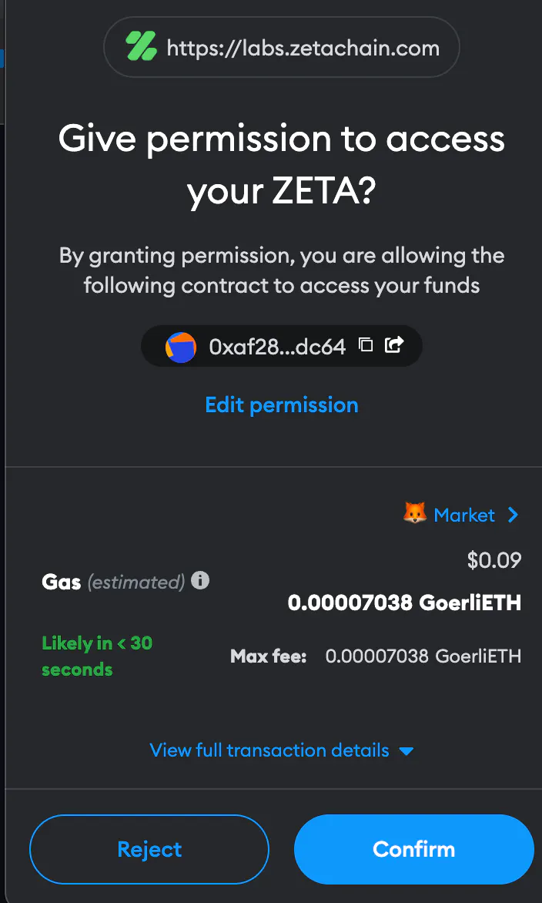

In this article, I will go through Zetachain Testnet, learn how to use it, and gain Zeta points.
Before That, Let’s examine what Zetachain is and why we want to participate in their testnet.
ZetaChain is the foundational, public blockchain that enables omnichain, generic smart contracts and messaging between any blockchain. It solves the problems of “cross-chain” and “multi-chain” and aims to extend the crypto and global financial ecosystem to anyone. ZetaChain envisions and supports a truly fluid, multi-chain crypto ecosystem where users and developers can move between and appreciate the benefits of any blockchain: payments, DeFi, liquidity, games, art, social graphs, performance, security, privacy, and so on.
Now, You know what Zetachain is. The second mentioned question was why we should use Zetachain Testnet.
Zetachain officially announced they would have their native token called $Zeta and may also do an airdrop. Early users who’ve done testnet actions on the platform may get an airdrop when they launch their token.
Let’s learn how to use Zetatestnet.
You can swap any tokens from and to any chain.
After you set your swap, Click on Review order. The next step should be to give Zetachain permission to access the requested token.
Click on Allow Zeta Transfer. After that, You will see the Metamask pop-up. In this pop-up, you can check permissions, Transfer fees, and other valuable data. By confirming the pop-up, you give access to Zetachain.
You have almost done. After that, Click on the Swap button. Again, You will see the Metamask pop-up, which should confirm the next step.
There are other ways to gain Zeta points. You can share your invitation link with your friends, and if they join the Zetachain testnet, You will get Zetapoins.